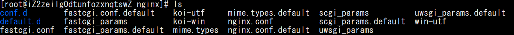
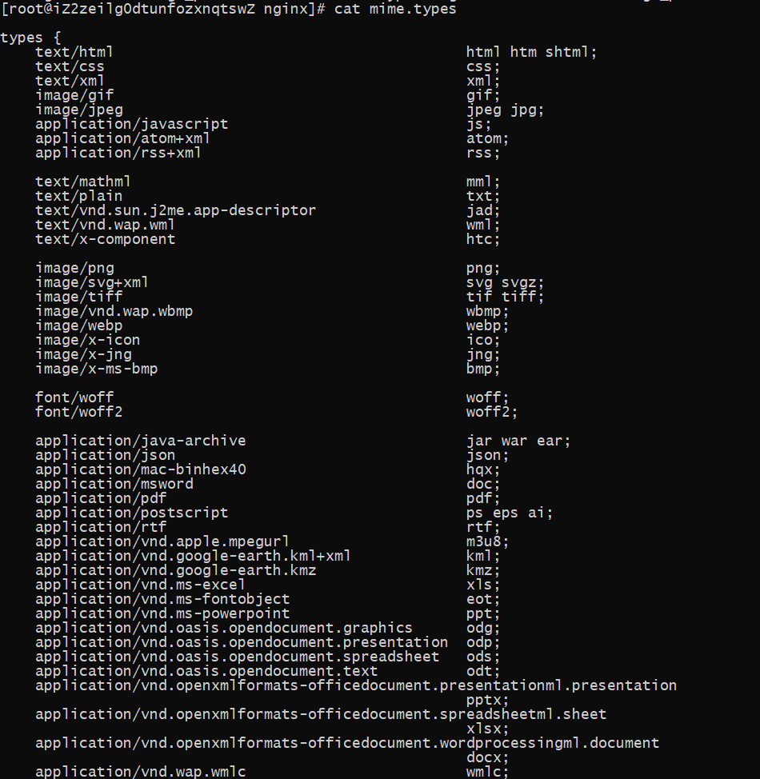

nginx.conf的常用配置类型和方法
本文最后更新于：1 年前
关于Nginx
Nginx是一个强大的网站服务器，它支持静态网站，本地代理和反向代理等等常用且实用的功能。该服务器包括很多的模块，不同的模块又有相应的指定的指令，ngingx通过读取这些指令进行相应的行为。
nginx有一个全局配置文件：nginx.conf。该全局配置文件可以定义几乎所有的Nginx指令。当然也可以在其他的文件中定义Nginx的相关指令，并在nginx.conf使用include xxx将这些指令引用到全局配置文件中，有点像C语言中的#include预编译指令。将过长的指令分配到不同的配置文件中可以使得配置更有条理便于维护。这里主要分析常用的Nginx配置文件组成和常用的虚拟服务器功能的配置方法。
安装Nginx
CentOS操作系统：
1 | |
Ubuntu 和 Debian
1 | |
按上述方法安装的Nginx的配置文件目录一般位于：/etc/nginx/
所以我们执行 $ cd /etc/nginx/ 进入Nginx的安配置文件目录。
执行 $ ls 命令可以看到Nginx配置文件目录的文件状态，如下图所示：

Nginx.conf 配置文件
首先我们打开配置文件，$ cat nginx.conf 或 $ vim nginx.conf
在Nginx配置文件中 =，每行以 ‘#’ 号开头的行为注释，调整配置文件时可以对这些行进行忽略。
Nginx配置文件每条配置语句均以半角分号’;’结尾。
main 模块
main模块是定义Nginx的主要参数的模块。其包括几个配置：
user nginx;这条指令定义了Nginx在操作系统中启动时使用的用户名，这里的配置意思是以nginx身份启动。worker_processes auto;这条指令是指定Nginx同时运行的进程数或Nginx的实例。Nginx有一个master进程，还有一些worker进。其中master进程是用来读取和鉴定配置，并将请求分配到不同的worker进程上去处理；worker进程是提供服务的进程，包括请求转发、代理、http缓存等等。这里的配置意思是自动分配worker进程数量。error_log /var/log/nginx/error.log;指定了发生错误时错误日志的目录。pid /run/nginx.pid;指定了Nginx的master进程ID(PID)写入的位置，操作系统会用到PID跟踪和发信号给Nginx进程。include /usr/share/nginx/modules/*.conf;指定了外部模块文件的储存位置，Nginx在该目录中找到这些文件并导入配置。
main 模块是Nginx配置模块中最地层的模块，其配置直接影响Nginx服务器，当然可以在更高级的服务器模块中配置相同的指令，这些指令将覆盖在 main 中配置的相关指令。
events
1 | |
这组配置使用到了一组大括号，该模块的上下文为events，里面用到了worker_connections 1024;指定了worker进程可以同时提供多少的连接服务。
http
1 | |
include /etc/nginx/mime.types;加载http服务使用到的MIME type。MiME type告诉浏览器，如何处理不同类型的文件。输出该文件，其内容可能如下：

access_log /var/log/nginx/access.log main;该指令指定了http访问日志的储存位置，该指令也可以在server和location模块中使用。index index.html index.htm;该指令指定了请求地址不包含指定文件时在该目录下查找的文件，若该文件不存在，则返回404错误。
server
1 | |
server 模块定义了一个虚拟主机，若想在服务器上配置多个网站，可以通过配置不同的server模块实现。一般每个server模块的配置可以单独使用文件进行保存。
listen 80 default_server;改指令指定了服务器的监听端口。监听端口前也可以加上IP地址，或主机地址。default_server的意思是如果是请求头不匹配其他虚拟主机名时，默认匹配给改虚拟主机。server_name localhost;该指令定义了服务器的虚拟主机名，当有请求时，Nginx获取请求头匹配来匹配使用哪个虚拟主机提供服务。若要配置域名访问或指定的IP地址访问，可以将localhost替换成需要的域名或IP地址即可。支持配置泛域名*.eaample.comroot /usr/share/nginx/html;该指令指定了该虚拟主机的请求地址对应的物理根目录，直接访问主机头可以得到该目录下的对应页面。
location
1 | |
location模块是server的二级模块，其配置Nginx响应请求的方式，如定义不同的请求目录等。若 location 后面接的是 ‘/‘ ，则对请求地址的根目录映射root所对应的根目录。
定义指定文件请求：
location 可以定义指定文件的处理方式，格式如下：
1 | |
表示定义对图片的请求方式，使用该请求方式可以实现将请求代理到CDN图床等等。。。
location 可以定义指定请求目录的处理方式，格式如下：
1 | |
改定义方式匹配/blog/请求目录，如匹配：localhost/blog/、example.com/blog/等等。
精确匹配可将 ^~ 换成 =。
Nginx 的常用服务器配置
静态网站虚拟主机
配置一个静态网站，至少需要指定以下几项参数：
- 网站监听端口
listen； - 虚拟主机名
server_name； - 网站根目录
root； - 虚拟主机目录
location； - 404页面
error_page；
如：需要在80和443端口上监听 www.aaa.com 和 aaa.com 虚拟主机根目录对应静态网站物理路径 /var/www/aaa.com/ ，错误页面在静态网站路径中。网站使用SSL证书加密，证书路径为：/var/www/aaa.com/crt/，配置图床地址为https://pic.aaa.com。则可以参考配置如下。
1 | |
如果配置http重定向至https可以修改80端口的虚拟主机为以下二选1：
1 | |
Nginx 配置端口代理
端口代理即nginx代替客户端访问本地端口服务，至少需要提供以下参数：
- 网站监听端口
listen； - 虚拟主机名
server_name； - 反向代理的地址
proxy_pass；
假设在本地有监听服务在http://127.0.0.1:1234，该服务需要获取远程IP，获取远程cookies。虚拟主机名为 aaa.com。
1 | |
若要进行TLS访问，可以如上一条所示添加443端口的虚拟主机监听。
Nginx 文件服务器
nginx的文件服务器同静态网站，其直接指向虚拟主机的主目录文件。配置方法：
1 | |
本博客所有文章除特别声明外，均采用 CC BY-SA 4.0 协议 ，转载请注明出处！